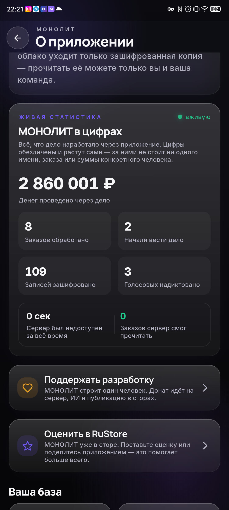

Дневник разработки · 07.07.2026
МОНОЛИТ в цифрах — живая стена дела

Обновление 1.3.7: в приложении и на сайте появилась живая стена — реальные цифры, которые дело наработало через МОНОЛИТ. Обновляются вживую, не нарисованы.
Что на стене
— 💰 Денег проведено через дело
— 📦 Заказов собрано
— 🔒 Записей зашифровано
— 🎙 Голосовых надиктовано
— ⏱ Секунд простоя сервера (пока ноль)
Цифры обезличены: за ними не стоит ни одного имени, заказа или суммы конкретного человека. Сервер видит только шифроблоки — прочитать твоё дело не может никто, кроме тебя. Это и показывает стена: «заказов сервер смог прочитать — 0».
Сайт тоже ожил 🌐
Новый главный экран: реальные цифры прямо в шапке вместо обещаний, и живьём видно, как фраза превращается в готовый заказ. Загляни: hazzy3525-create.github.io/monolith
Приложение — в RuStore, свежую бету беру в личку по запросу. Бесплатно на бете. Видишь потенциал — пиши @sbphotoshoter.
МОНОЛИТ — учёт заказов, клиентов и денег одной фразой. Windows и Android, бесплатная бета.
Скачать Читать канал